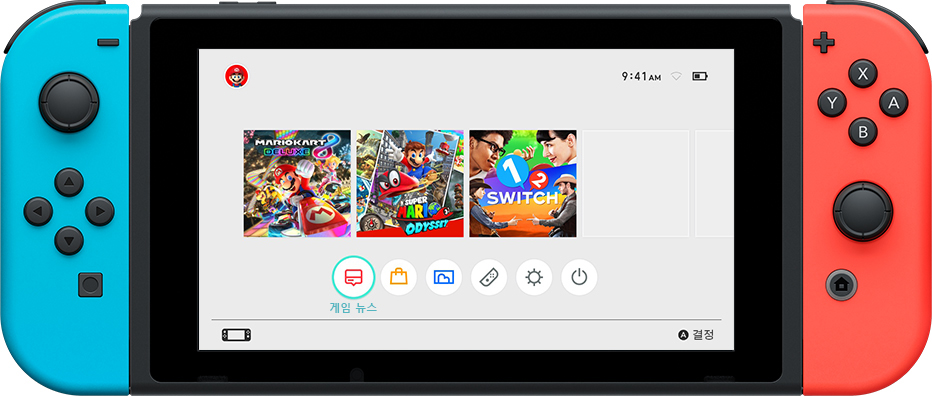

닌텐도 스위치기능 및 사양
kinds
- Nintendo Switch 본체
- Nintendo Switch 독
- Joy-Con
- Joy-Con 스트랩
- Joy-Con 그립
HOME 메뉴
게임이나 각종 기능을 기동하는 Nintendo Switch의 중심이 되는 화면입니다. 친구나 어카운트의 관리를 비롯해 각종 설정도 변경할 수 있습니다.

게임에 관한 최신 정보 등을 Nintendo Switch 본체에 수신합니다.
-
 뉴스
뉴스
- 닌텐도 e숍
- 앨범